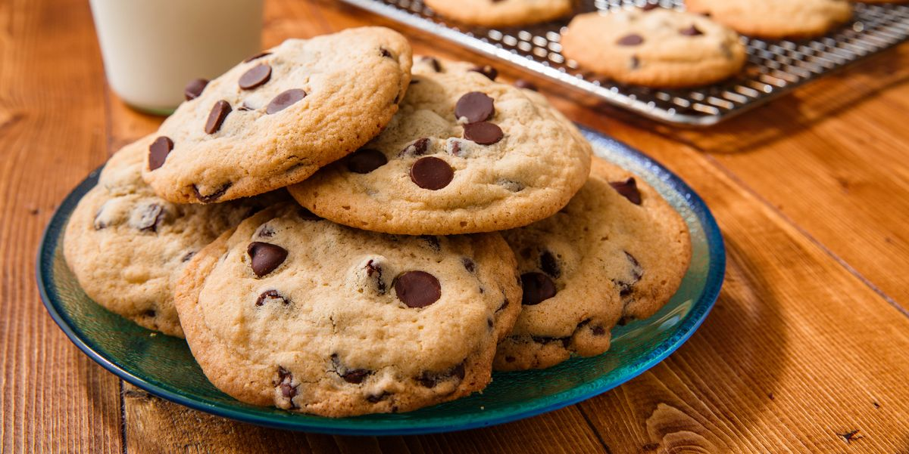

Çikolatalı Cookies Tarifi

Çikolatalı Cookies Tarifi İçin Malzemeler
- 125 gram tereyağı
- 1/2 su bardağı esmer şeker
- 1 adet yumurta
- 1 paket vanilya
- 1 çay kaşığı karbonat
- 1 çimdik tuz
- 1 yemek kaşığı nişasta
- 1.5 su bardağı un
- 200 gram damla çikolata
Çikolatalı Cookies Tarifi Nasıl Yapılır?
- Tereyağı, beyaz şeker ve esmer şekeri çırpın. Üzerine yumurtayı ekleyip tekrar çırpın.
- Ardından vanilyayı, karbonatı, tuzu, nişastayı ve unu ekleyip çırpmaya devam edin. En son olarak
çikolata parçalarını da ekleyip son bir kez karıştırın.
- Kurabiye harcına dondurma kaşığı ile tek tek şekil vererek porsiyonlayın ve aralarına en az 4 cm
mesafe kalacak şekilde fırın tepsisine yerleştirin.
- Kenara ayırdığımız çikolata parçalarını cookie'lerin üzerine bastırın.
Önceden ısıtılmış fırında, 200 derecede alt üst ayarda 10-12 dakika kadar pişirin. (Kenarları
kızarana kadar). Fırından çıktıktan sonra tepside soğumaya bırakın. Ardından servis edin. Afiyet
olsun.